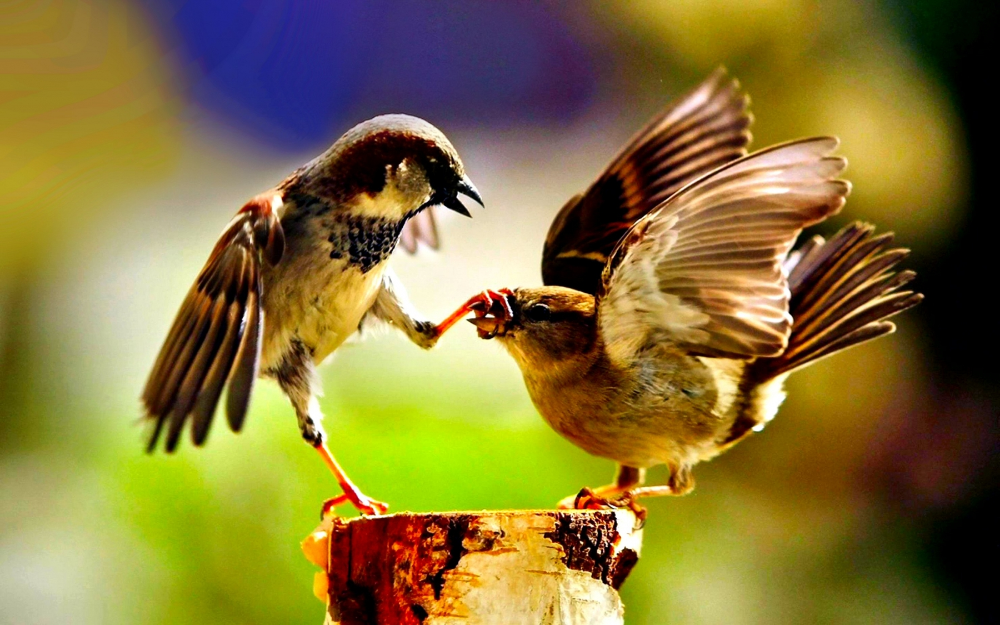

How you will help save wildlife:
· Fundraise: Support saving animals around the world —from sea turtles off the Texas Gulf Coast to Asian
elephants in Borneo. Help us reach our goal of $100,000! You will earn cool swag for reaching fundraising
milestones. Learn more
· Earn Points: You can earn extra points starting right now by sharing your story, getting a friend to
donate,
tracking your fitness progress, and more! Earning points will help you win prizes including a cheetah walk
or a
three species Zoo tour! See prizes
